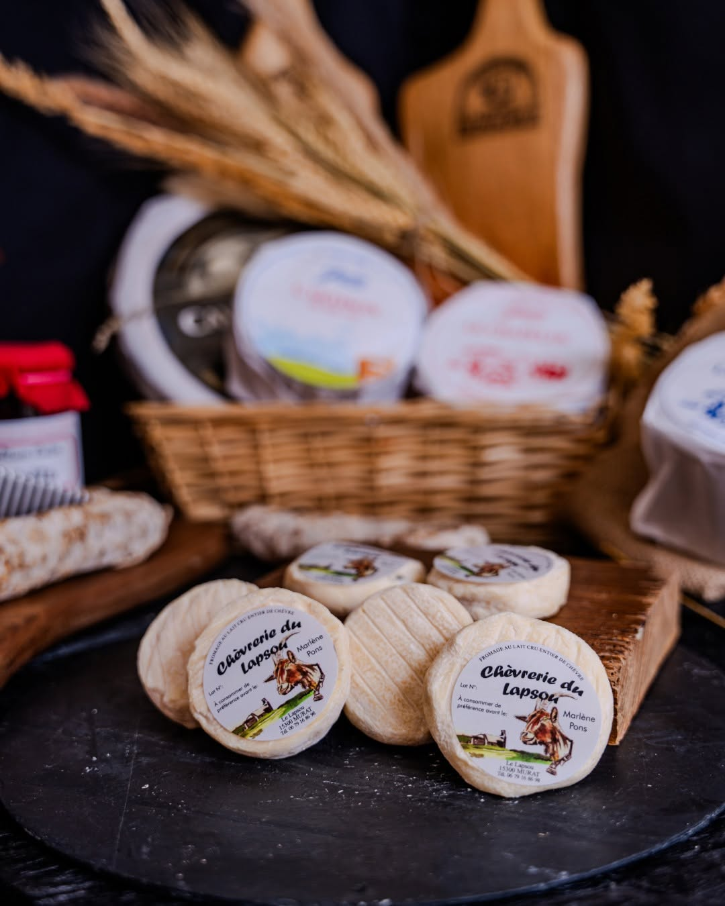

Cabécou fermier
- Lait
- Lait cru entier de chèvre
- Ingrédients
- Lait, sel, présure
- Caillé
- Lactique, moulé à la main
- Poids
- 85 g environ
- Conservation
- 30 jours au frais
- Goût
- Doux, frais, plus ou moins crémeux selon la saison
Tout ce qui sort de l'atelier du Lapsou est fabriqué avec le lait de nos chèvres, cru et entier, moulé à la main.

Un petit palet de chèvre lactique, très doux, plus ou moins crémeux selon ce que les chèvres ont brouté. C'est le fromage qui raconte le mieux la ferme : au printemps et en été il a le goût de l'herbe fraîche, l'hiver celui du foin.
À la ferme, les fromages sont proposés à différents stades d'affinage. Plus il attend, plus le fromage se resserre et prend du caractère.
Pâte blanche et fondante, goût de lait. Avec des herbes, un filet de miel ou sur une tartine.
Une fine croûte commence à se former, le cœur reste souple. Parfait sur le plateau.
La pâte se tient, le goût de chèvre s'affirme. Délicieux chaud, sur une salade de pays.
Ferme, cassant, avec de la longueur en bouche. À l'apéritif ou râpé en cuisine.
Les mêmes fromages, laissés plus longtemps au hâloir. Selon la saison et la quantité de lait, plusieurs affinages sont disponibles à la ferme.
Onctueux et légers, préparés avec le lait du troupeau. Souvent ceux qui « n'aiment pas la chèvre » changent d'avis en les goûtant.
Les fromages suivent la lactation des chèvres : selon le moment de l'année, tout n'est pas toujours disponible. Un coup de fil au 06 79 16 86 98 permet de réserver.
Tous les jours au Lapsou, mais aussi chez PA Cantal, à la Ferme du Puy de Coujoule et sur le plateau de fromages du Grand Café, à Murat.